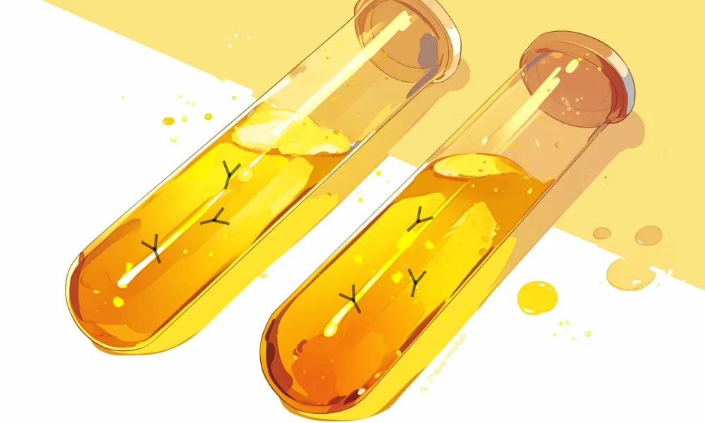

北里柴三郎
近代日本医学の父
新千円札
2024年7月から新千円札になる。髭や丸眼鏡や蝶ネクタイをお札と見比べてみよう。
研究所
当時の研究所をイメージ。機械が少なくガラス瓶が多いなど、今とどこが違うか考えてみよう。


[人物プロフィール]
生没年
1853年～1931年
時代
明治時代
身分
医者

彼の研究室には、いつも犬がいて一緒に過ごしてたんだ。
北里柴三郎ってどんなひと？
明治時代の医師で、破傷風菌の発見者です。彼の研究は、近代医学に大きな貢献をしました。北里の情熱と探求心は、多くの人々に尊敬されています。
コラム
（カード右上）研究だけをやっていたのではダメだ。それをどうやって世の中に役立てるかを考えよ。
カードの効果解説！
血清療法
血清療法は、細菌やウイルスの感染症を治療する方法です。1890年代に北里柴三郎が開発し、多くの命を救いました。この発見は、医学の進歩に大きな影響を与えました。
伝染病研究所
伝染病研究所は、19世紀末に設立された医学研究所で、北里柴三郎が設立に関与しました。多くの伝染病の研究と治療法の開発が行われました。この研究所は、多くの命を救うことに貢献しました。
弥生時代ってどんな時代？
弥生時代ってこんな時代 ってのをなんとなく。時代かぶってたりしたら関連人物 との繋がりについて纏める感 じで。弥生時代ってこんな時代 ってのをなんとなく。時代かぶってたりしたら関連人物 との繋がりについて纏める感 じで。


クイズ！：北里柴三郎が発見した病原菌はなんでしょう？